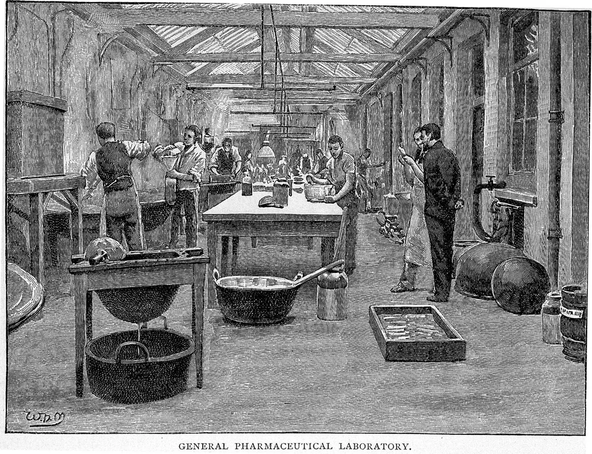
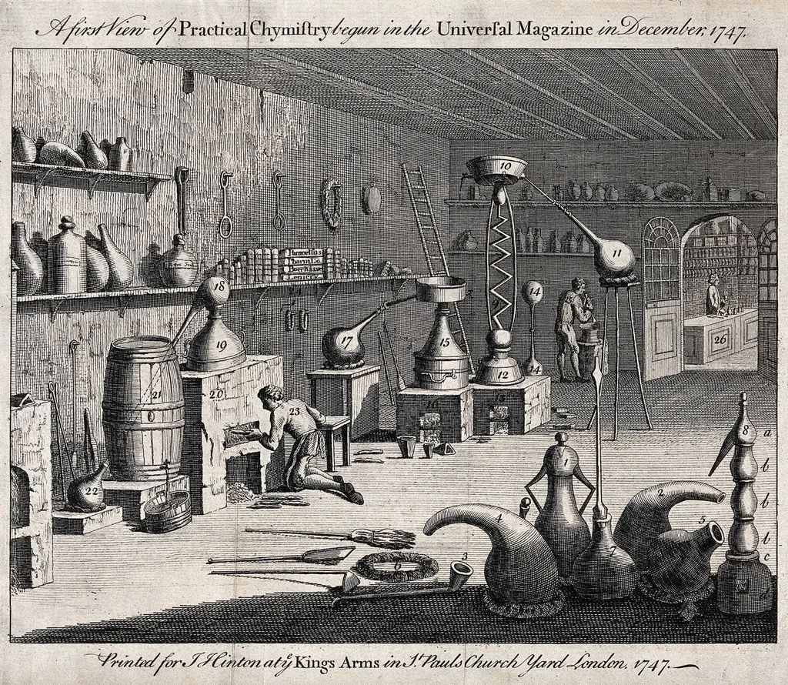

삼성바이오로직스, 2.7조원에 폴리펩타이드 그룹 인수
삼성바이오로직스가 스위스 소재 펩타이드 위탁개발생산(CDMO) 기업 폴리펩타이드 그룹을 인수한다고 20일 밝혔다. 인수 금액은 약 2조7000억 원으로, 국내 제약·바이오 업계 인수합병 사례 가운데 가장 큰 규모다. 삼성바이오로직스는 대주주 지분 인수와 공개매수를 병행해 폴리펩타이드 그룹의 지분 100%를 확보할 계획이며, 연내 인수 절차를 최종 마무리한다는 목표를 세웠다. 이번 발표로 국내외 제약·바이오 업계에서는 삼성바이오로직스의 다음 행보에 관심이 쏠리고 있다.
폴리펩타이드 그룹은 1996년 글로벌 제약사 페링의 펩타이드 생산 사업부에서 분사한 회사로, 스위스 바르에 본사를 두고 펩타이드 위탁생산 분야에서 오랜 업력을 쌓아왔다. 유럽과 미국 등지에 생산 거점을 보유하고 있어, 글로벌 공급망을 활용한 시너지도 기대되는 대목이다. 삼성바이오로직스는 이번 인수를 통해 그동안 강점을 보여온 항체의약품과 메신저 리보핵산, 항체약물접합체 중심의 사업 구조에서 펩타이드 분야로 서비스 영역을 넓히게 됐다.

펩타이드 의약품 시장은 최근 비만·당뇨 치료제 열풍과 맞물려 빠르게 성장하고 있는 분야로 꼽힌다. 관련 치료제 수요가 전 세계적으로 늘어나면서, 이를 위탁 생산할 수 있는 CDMO 역량을 확보하는 것이 제약·바이오 기업들의 핵심 경쟁 요소로 떠올랐다. 대형 제약사들이 앞다퉈 펩타이드 치료제 개발과 생산 능력 확충에 나서면서, 관련 위탁생산 시장의 성장세는 당분간 이어질 것으로 전망된다. 삼성바이오로직스는 이번 인수로 관련 수요에 선제적으로 대응할 발판을 마련했다는 평가를 받는다.
업계에서는 이번 거래가 삼성바이오로직스의 사업 다각화 전략을 보여주는 상징적 사례라는 분석을 내놓고 있다. 항체의약품 위탁생산 분야에서 이미 세계적 수준의 생산능력을 갖춘 회사가, 성장성이 큰 펩타이드 분야까지 영역을 넓히면서 종합 바이오 CDMO로서의 입지를 강화하려는 행보로 풀이된다. 특정 치료 영역이나 생산 방식에 의존하지 않는 다변화된 사업 구조를 갖추려는 시도로도 해석된다.

다만 대규모 인수인 만큼 통합 과정에서 조직·설비 운영 방식을 조율하는 데 상당한 시간과 비용이 소요될 것이라는 전망도 나온다. 서로 다른 생산 체계와 품질관리 기준을 하나로 맞추는 작업이 인수 완료 이후 본격적인 과제가 될 것으로 보이며, 유럽 현지 규제 당국의 심사 절차도 거쳐야 하는 만큼 최종 마무리까지는 시일이 더 걸릴 수 있다는 관측도 있다.
증권가에서는 이번 인수가 성공적으로 마무리될 경우 삼성바이오로직스의 중장기 실적에 긍정적으로 작용할 것으로 내다보고 있다. 특히 기존 항체의약품 중심 매출 구조에 새로운 성장 축이 더해진다는 점에서 실적 다변화 효과에 대한 기대도 나온다. 국내 바이오 업계 최대 규모 M&A인 만큼, 향후 통합 진행 상황과 실적 반영 시점에 시장의 관심이 이어질 전망이다. 국내 다른 바이오 기업들도 이번 거래를 계기로 해외 CDMO 기업 인수나 협력에 나설지 업계의 관심이 쏠린다. 이번 인수가 마무리되면 한국 바이오 산업이 글로벌 CDMO 시장에서 차지하는 위상도 한 단계 높아질 것이라는 기대가 나온다.